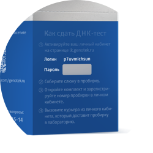

genotek
 доступно только мне
доступно только мне
Подарочный набор для сдачи ДНК-теста доставлен
Спасибо, что выбрали Genotek! На упаковке вы найдете подробную инструкцию как сдать ДНК-тест.

Как подарить набор другу, чтобы он создал свой личный кабинет?
Все просто! На подарочной упаковке ДНК-теста указан временный логин и пароль, который защищен стираемой полосой. Человеку, который получил ДНК-тест в подарок, нужно ввести временный логин и пароль на странице входа в личный кабинет lk.genotek.ru. После этого ему будет предложено зарегистрироваться или указать данные уже зарегистрированного пользователя, ввести номер пробирки и вызвать курьера для доставки биоматериала в лабораторию. Обратите внимание, что по умолчанию вы не получите доступ к результатам ДНК-теста того, кому вы подарили тест. Но вы можете попросить вашего близкого поделиться с вами результатами в его настройках профиля.
Хочу активировать ДНК-тест в этом личном кабинете
На подарочной упаковке ДНК-теста указан временный логин и пароль, который защищен стираемой полосой. Пожалуйста, введите их ниже. После ввода временных данных, вы сможете ввести номер пробирки и вызвать курьера для доставки биоматериала в лабораторию.